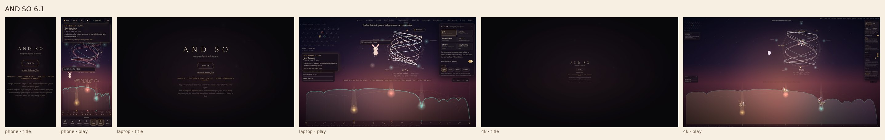

AND SO 6.1
Dark by default. Tilt, shake and twist reach the world; a guided reel; 31-EDO; glasshouse and peachfall looks; the demo hummer joins after a while.
frozen 2026-10-26 · 431,542 bytes · sha256 b2ef5914e46126fc…
Frozen copies. Each one is the exact page as it shipped, byte for byte, kept playable here before the next version replaced it. sae-kirby makes them.

Dark by default. Tilt, shake and twist reach the world; a guided reel; 31-EDO; glasshouse and peachfall looks; the demo hummer joins after a while.
frozen 2026-10-26 · 431,542 bytes · sha256 b2ef5914e46126fc…